久しぶりに羽田に来たら、トイレにモニタがついていてびっくりした。
なんだ。そんなに長居してほしいのか。
トーキョー！
久しぶりに羽田に来たら、トイレにモニタがついていてびっくりした。
なんだ。そんなに長居してほしいのか。
トーキョー！
{kind=link}
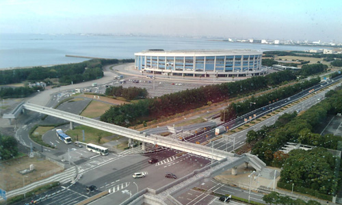
忘年会会場近くのホテルに泊まる。 なんか見晴らしがいいなー。 大浴場がついていたのだけど、大行列。 そそくさと出てきましたー。 中国、韓国からの観光客が多いのね。中国のおねーさんはスタイルが良い。ぷりんとしてる。{kind=link}
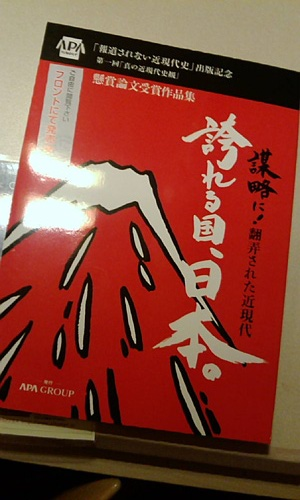
あーこれがウワサの懸賞論文か！{kind=link}
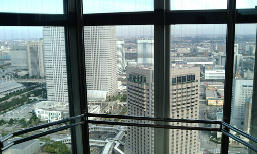
50階ぐらいまで、スケスケエレベーター{kind=link}
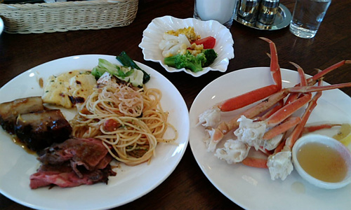
ランチバイキングが無料だった。 のでカニ食べる。 2回カニおかわりしたら、となりの席の老夫婦がびっくりしながらブロッコリー食べてた。 パチンと関節のトコで折ってカニ肉を引き出すのがこつ。 冷凍はきれいに出ないことがあるので、一回内側の関節近くで折って出してから再度外側の関節を折って引き出すと出やすい。 カニばっちこーい！{kind=link}
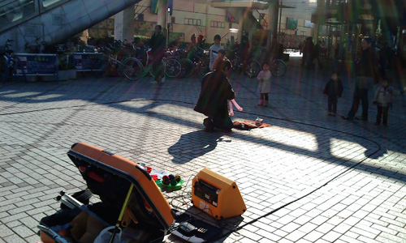
駅前の侘びしい大道芸。 なんだこれは修行か？{kind=link}
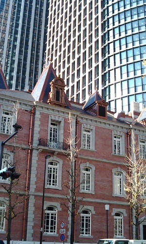
飛行機の時間まで有楽町界隈で町歩き。{kind=link}
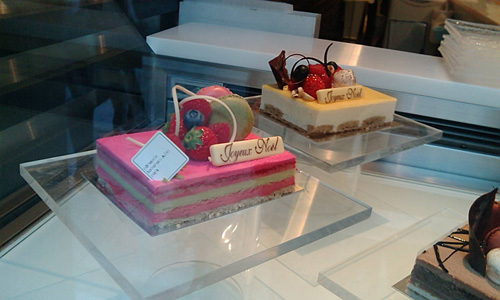
あー。クリスマスイブイブだっけ。 ケーキ！大人ケーキ！{kind=link}
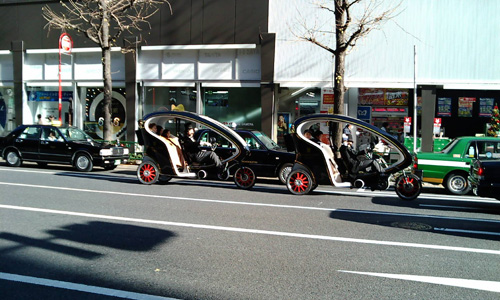
ヒゲの運転手。写真撮ったら、手を振ってくれた。{kind=link}
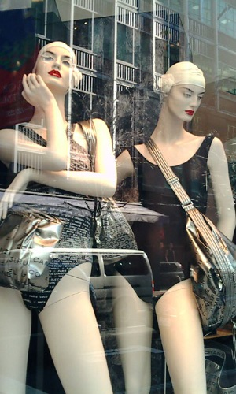
冬だけど、シャネルは夏。でも、シャネルだと違和感ないな… でも私ももう夏の仕事が来ています。 やっぱり都心に来れば来るほど時間の流れが早い。ボートを漕げ、水を掻き出せ。 溺れるわたし。ぼこぼこ。{kind=link}
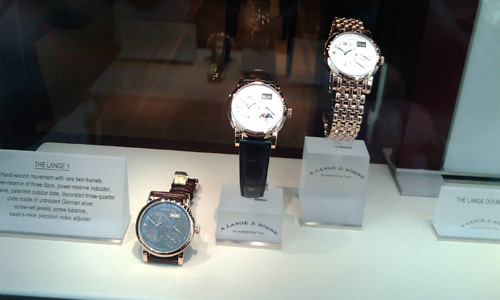
ランゲ＆ゾーネ。{kind=link}
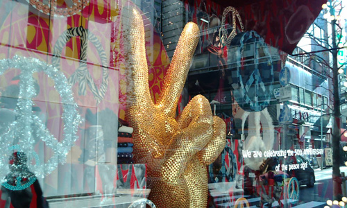
バーニーズ。こんなに混雑しているのは初めて。 やっぱりクリスマスプレゼントのためなのかなー。ショーケースを見つめる女の子の目はいつでもキラキラ。ああ。男の子はドキドキ。{kind=link}
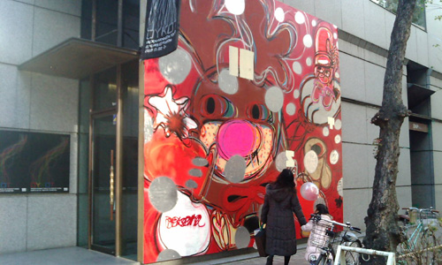
銀座を歩くようになったのはここ何年か。 ここ最近の銀座の変化は大きいけど、私の銀座界隈への傾倒ぶりもすさまじい。 でも買わない。歩く。見る。触る、接する。 仕事の考え方や、仕事自体が変わったこともあってか、必要としているもの、しらなくてはならないことが増えたのだけど、それを探したり、考えたりすることにヒントを感じやすい場所。 きっと他にもあるのだろうけど、今は銀座、丸の内界隈がそーゆー大事な場所となってますがな。 ホント今年はお世話になりました。 ありがとー！とアスファルトふみふみ。{kind=link}
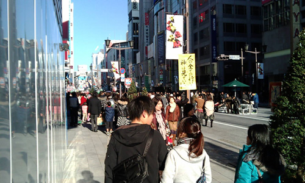
クリスマス前は賑やかでいいなー。{kind=link}
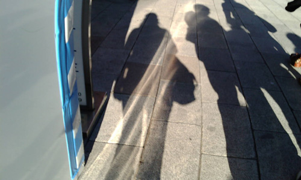
影が長い。 つーか、相変わらずわたしは荷物が多い。 荷物の少ない人間になりたい。{kind=link}
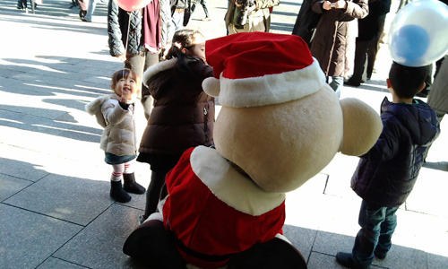
ファミリアの前でクマがフーセン配ってた。 小さいときファミリアのぬいぐるみが大好きだったなぁと。 ぼろぼろのよごれまくりのクマ。ふとあのぬいぐるみの感触と匂いを思い出したりする。 あーあのふわふわ！{kind=link}
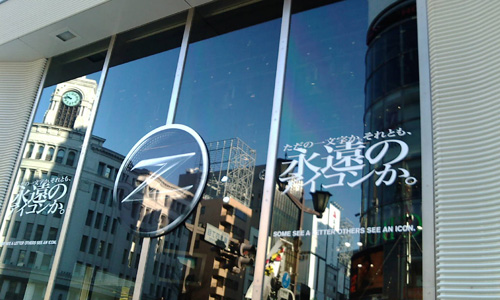
で、いつものごとく日産ギャラリー。 黄色好きかも。でも、小学生のときのともだちとの誓いで黄色の車はダメなんだ！ （ちっちゃい虫が付くから！で、つぶれて赤くなるから！ダメ！）{kind=link}
{kind=link}
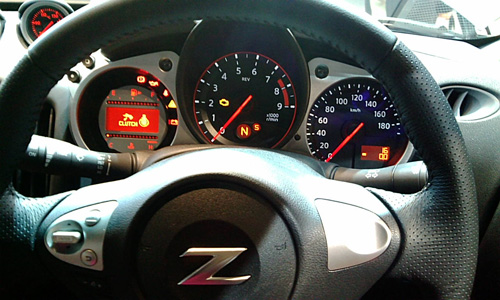
もちろん乗ってみる。 あれ？去年も年末に新型スカイラインに乗ったなー。{kind=link}
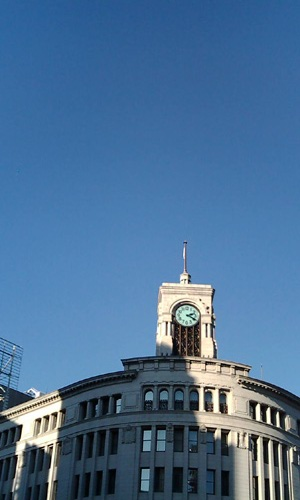
青空の休日。 こんな銀座の空にはフーセンが似合うねー。